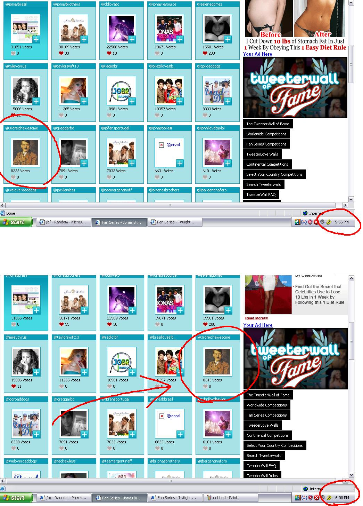
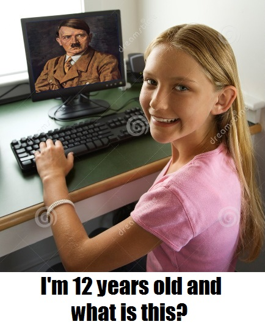

The Internet is Serious Business!
Home > Computers, Technology, and Internet > 4chan > Voting for Hitler on Twitter

On the evening of Sunday, 6 September 2009 (the last modified date of the image above), I was browsing /b/ when I came across a thread urging us to all go to some Web site which was holding some sort of popularity poll of Twitter accounts, and to then vote for the @3rdreichawesome account, no doubt a troll account that was using a portrait of Hitler as the profile picture. Messing with online polls is a long and lulzy /b/ tradition (remember how we managed to make moot the winner of the Time 100 poll in 2009?), so I decided to participate by heading to the site and casting my vote for the @3rdreichawesome account.
Compared to other 4chan pranks, this poll was a rather minor affair; I only remember it and write about it here because I happened to take a screenshot of the site that day. When I first went to the Web site, the Hitler account was in 11th place (the @jonasbrasil account was 1st), but, as you can see from the image, in only four minutes we managed to push him to 10th place. Unfortunately for us, though, I recall that, later on, that Web site took notice of our antics and removed the @3rdreichawesome account from the poll.
Notice that 8 of the top 9 accounts are those of either Demi Lovato, Selena Gomez, Miley Cyrus, Taylor Swift, or have something to do with the Jonas Brothers (I can't tell for sure what the @radiojbr account is about, but it seems to me to also concern the Jonas Brothers); I imagine that a lot of 12-year-old girls using the site that day learned a bit of history:



 All written materials on this Web site are my own, and all are released under the Do What the Fuck You Want to Public License Version 2.
All written materials on this Web site are my own, and all are released under the Do What the Fuck You Want to Public License Version 2.
This page last modified on 26 March 2021.